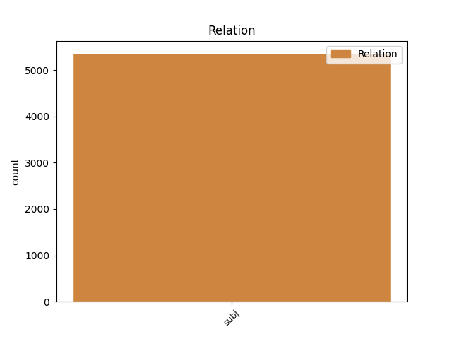
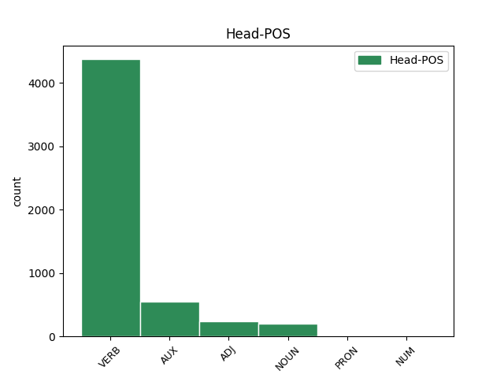
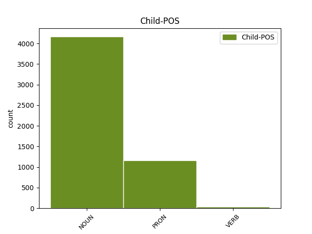

Distribution of features within this leaf



Agreement Rules sorted by frequency.
- When the dependent token is the subject(subj) of the head token, and the dependent token is NOUN.
1 ל _ _ _ _ 0 _ _ _
2 גליל _ _ _ _ 0 _ _ _
3 לא _ _ _ _ 0 _ _ _
4 היתה _ VERB VERB Gender=Fem|HebExistential=True|Number=Sing|Person=3|Polarity=Pos|Tense=Past 0 _ _ _
5 תשובה תשובה NOUN NOUN Gender=Fem|Number=Sing 4 subj _ _
6 ל _ _ _ _ 0 _ _ _
7 ה_ _ _ _ _ 0 _ _ _
8 יכולת _ _ _ _ 0 _ _ _
9 ה _ _ _ _ 0 _ _ _
10 אישית _ _ _ _ 0 _ _ _
11 ה _ _ _ _ 0 _ _ _
12 גבוהה _ _ _ _ 0 _ _ _
13 של _ _ _ _ 0 _ _ _
14 פירסון _ _ _ _ 0 _ _ _
15 , _ _ _ _ 0 _ _ _
16 ש _ _ _ _ 0 _ _ _
17 קלע _ _ _ _ 0 _ _ _
18 33 _ _ _ _ 0 _ _ _
19 נקודות _ _ _ _ 0 _ _ _
20 ו _ _ _ _ 0 _ _ _
21 ריכז _ _ _ _ 0 _ _ _
22 את _ _ _ _ 0 _ _ _
23 משחק _ _ _ _ 0 _ _ _
24 קבוצה_ _ _ _ _ 0 _ _ _
25 _של_ _ _ _ _ 0 _ _ _
26 _הוא _ _ _ _ 0 _ _ _
27 במשך _ _ _ _ 0 _ _ _
28 דקות _ _ _ _ 0 _ _ _
29 רבות _ _ _ _ 0 _ _ _
30 . _ _ _ _ 0 _ _ _
1 אך _ _ _ _ 0 _ _ _
2 הוא הוא PRON PRON Gender=Masc|Number=Sing|Person=3|PronType=Prs 6 subj _ _
3 לבדו _ _ _ _ 0 _ _ _
4 לא _ _ _ _ 0 _ _ _
5 יכול _ _ _ _ 0 _ _ _
6 היה _ AUX AUX Gender=Masc|Number=Sing|Person=3|Polarity=Pos|Tense=Past|VerbType=Cop 0 _ _ _
7 לנצח _ _ _ _ 0 _ _ _
8 את _ _ _ _ 0 _ _ _
9 ה _ _ _ _ 0 _ _ _
10 משחק _ _ _ _ 0 _ _ _
11 . _ _ _ _ 0 _ _ _
1 רבים רב VERB VERB Gender=Masc|HebBinyan=PAAL|Number=Plur|Person=1,2,3|VerbForm=Part|Voice=Act 4 subj _ _
2 מהם _ _ _ _ 0 _ _ _
3 _הם _ _ _ _ 0 _ _ _
4 חשו חש VERB VERB Gender=Fem,Masc|HebBinyan=PAAL|Number=Plur|Person=3|Tense=Past|Voice=Act 0 _ _ _
5 להתנדב _ _ _ _ 0 _ _ _
6 ב _ _ _ _ 0 _ _ _
7 שגרירויות _ _ _ _ 0 _ _ _
8 כוויית _ _ _ _ 0 _ _ _
9 ב _ _ _ _ 0 _ _ _
10 רחבי _ _ _ _ 0 _ _ _
11 ה _ _ _ _ 0 _ _ _
12 עולם _ _ _ _ 0 _ _ _
13 ו _ _ _ _ 0 _ _ _
14 שילמו _ _ _ _ 0 _ _ _
15 בעד _ _ _ _ 0 _ _ _
16 נסיעה_ _ _ _ _ 0 _ _ _
17 _של_ _ _ _ _ 0 _ _ _
18 _הם _ _ _ _ 0 _ _ _
19 ל _ _ _ _ 0 _ _ _
20 מחנות _ _ _ _ 0 _ _ _
21 ה _ _ _ _ 0 _ _ _
22 אימונים _ _ _ _ 0 _ _ _
23 של_ _ _ _ _ 0 _ _ _
24 _הם _ _ _ _ 0 _ _ _
25 . _ _ _ _ 0 _ _ _
Disagree Examples:
1 שוטר שוטר NOUN NOUN Gender=Masc|Number=Sing 4 subj _ _
2 ו _ _ _ _ 0 _ _ _
3 חייל _ _ _ _ 0 _ _ _
4 אחזו אחז VERB VERB Gender=Fem,Masc|Number=Plur|Person=3|Tense=Past 0 _ _ _
5 ב _ _ _ _ 0 _ _ _
6 דלתות _ _ _ _ 0 _ _ _
7 ה _ _ _ _ 0 _ _ _
8 אמבולנס _ _ _ _ 0 _ _ _
9 , _ _ _ _ 0 _ _ _
10 כש _ _ _ _ 0 _ _ _
11 שפן_ _ _ _ _ 0 _ _ _
12 _של_ _ _ _ _ 0 _ _ _
13 _הם _ _ _ _ 0 _ _ _
14 אל _ _ _ _ 0 _ _ _
15 ה _ _ _ _ 0 _ _ _
16 מתפרעים _ _ _ _ 0 _ _ _
17 , _ _ _ _ 0 _ _ _
18 כדי _ _ _ _ 0 _ _ _
19 לסוכך _ _ _ _ 0 _ _ _
20 על _ _ _ _ 0 _ _ _
21 ה _ _ _ _ 0 _ _ _
22 פצוע _ _ _ _ 0 _ _ _
23 ה _ _ _ _ 0 _ _ _
24 ערבי _ _ _ _ 0 _ _ _
25 . _ _ _ _ 0 _ _ _
1 ה _ _ _ _ 0 _ _ _
2 שאר שאר NOUN NOUN Gender=Masc|Number=Sing 3 subj _ _
3 נפצעו נפצע VERB VERB Gender=Fem,Masc|HebBinyan=NIFAL|Number=Plur|Person=3|Tense=Past|Voice=Mid 0 _ _ _
4 מ _ _ _ _ 0 _ _ _
5 גז _ _ _ _ 0 _ _ _
6 , _ _ _ _ 0 _ _ _
7 ב_ _ _ _ _ 0 _ _ _
8 _הם _ _ _ _ 0 _ _ _
9 ילדים _ _ _ _ 0 _ _ _
10 רבים _ _ _ _ 0 _ _ _
11 ב _ _ _ _ 0 _ _ _
12 גיל _ _ _ _ 0 _ _ _
13 01 _ _ _ _ 0 _ _ _
14 ו _ _ _ _ 0 _ _ _
15 21 _ _ _ _ 0 _ _ _
16 ו _ _ _ _ 0 _ _ _
17 ארבע _ _ _ _ 0 _ _ _
18 נשים _ _ _ _ 0 _ _ _
19 ב _ _ _ _ 0 _ _ _
20 הריון _ _ _ _ 0 _ _ _
21 . _ _ _ _ 0 _ _ _
1 מקורות _ _ _ _ 0 _ _ _
2 פלשתיניים _ _ _ _ 0 _ _ _
3 דיווחו _ _ _ _ 0 _ _ _
4 כי _ _ _ _ 0 _ _ _
5 עיקר עיקר NOUN NOUN Definite=Cons|Gender=Masc|Number=Sing 8 subj _ _
6 ה _ _ _ _ 0 _ _ _
7 מהומות _ _ _ _ 0 _ _ _
8 היו היה AUX AUX Gender=Fem,Masc|Number=Plur|Person=3|Polarity=Pos|Tense=Past|VerbType=Cop 0 _ _ _
9 אתמול _ _ _ _ 0 _ _ _
10 ב _ _ _ _ 0 _ _ _
11 אזור _ _ _ _ 0 _ _ _
12 בית _ _ _ _ 0 _ _ _
13 חנון _ _ _ _ 0 _ _ _
14 , _ _ _ _ 0 _ _ _
15 ש _ _ _ _ 0 _ _ _
16 שם _ _ _ _ 0 _ _ _
17 נפצעו _ _ _ _ 0 _ _ _
18 34 _ _ _ _ 0 _ _ _
19 תושבים _ _ _ _ 0 _ _ _
20 , _ _ _ _ 0 _ _ _
21 מן_ _ _ _ _ 0 _ _ _
22 _הם _ _ _ _ 0 _ _ _
23 חמישה _ _ _ _ 0 _ _ _
24 קשה _ _ _ _ 0 _ _ _
25 . _ _ _ _ 0 _ _ _
1 רובם _ NOUN NOUN Gender=Masc|Number=Sing 3 subj _ _
2 _הם _ _ _ _ 0 _ _ _
3 שוחררו שוחרר VERB VERB Gender=Fem,Masc|HebBinyan=PUAL|Number=Plur|Person=3|Tense=Past|Voice=Pass 0 _ _ _
4 ו _ _ _ _ 0 _ _ _
5 אחרים _ _ _ _ 0 _ _ _
6 נותרו _ _ _ _ 0 _ _ _
7 ב _ _ _ _ 0 _ _ _
8 מעצר _ _ _ _ 0 _ _ _
9 . _ _ _ _ 0 _ _ _
1 ו _ _ _ _ 0 _ _ _
2 זה _ _ _ _ 0 _ _ _
3 מה _ _ _ _ 0 _ _ _
4 ש _ _ _ _ 0 _ _ _
5 מביא _ _ _ _ 0 _ _ _
6 את _ _ _ _ 0 _ _ _
7 שגב _ _ _ _ 0 _ _ _
8 ל _ _ _ _ 0 _ _ _
9 ה_ _ _ _ _ 0 _ _ _
10 פסקה _ _ _ _ 0 _ _ _
11 ה _ _ _ _ 0 _ _ _
12 לא _ _ _ _ 0 _ _ _
13 - _ _ _ _ 0 _ _ _
14 תיאמן _ _ _ _ 0 _ _ _
15 ה _ _ _ _ 0 _ _ _
16 באה _ _ _ _ 0 _ _ _
17 : _ _ _ _ 0 _ _ _
18 " _ _ _ _ 0 _ _ _
19 ה _ _ _ _ 0 _ _ _
20 מסע _ _ _ _ 0 _ _ _
21 כרך _ _ _ _ 0 _ _ _
22 פולחן _ _ _ _ 0 _ _ _
23 ש _ _ _ _ 0 _ _ _
24 כולו כול NOUN NOUN Gender=Masc|Number=Sing 26 subj _ _
25 _הוא _ _ _ _ 0 _ _ _
26 רגשות רגש NOUN NOUN Gender=Masc|Number=Plur 0 _ _ _
27 ו _ _ _ _ 0 _ _ _
28 סמלים _ _ _ _ 0 _ _ _
29 , _ _ _ _ 0 _ _ _
30 ו _ _ _ _ 0 _ _ _
31 סגידה _ _ _ _ 0 _ _ _
32 ביזארית _ _ _ _ 0 _ _ _
33 לעתים _ _ _ _ 0 _ _ _
34 ל _ _ _ _ 0 _ _ _
35 זיכרון _ _ _ _ 0 _ _ _
36 , _ _ _ _ 0 _ _ _
37 ל _ _ _ _ 0 _ _ _
38 מוות _ _ _ _ 0 _ _ _
39 ו _ _ _ _ 0 _ _ _
40 ל _ _ _ _ 0 _ _ _
41 קיטש _ _ _ _ 0 _ _ _
42 . _ _ _ _ 0 _ _ _